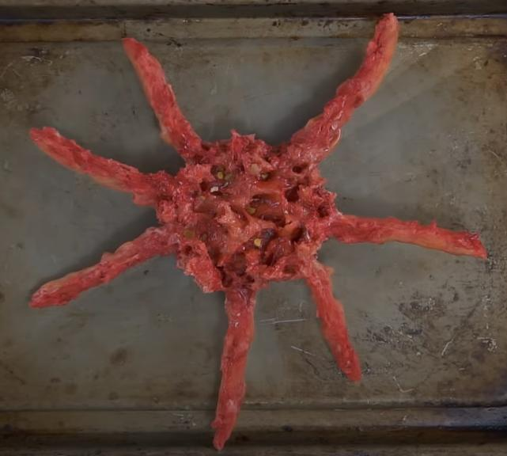

Baked Seven Leg Parasite Recipe

Ingredients
- Potato with Breathing Hole (parasite has to have 7 legs)
- Olive or Vegetable Oil
- Chili Flakes
Steps
- Preheat oven to 180 degrees
- Peel skin until finding the parasite inside
- Pull the parasite outside and leave it until it dies
- Sprinkle chili flakes on it
- Spread oil on a baking tray
- Bake for 40 minutes
Home